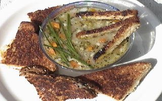

MOCK CHICKEN SOUP
- 10 CUPS OF WATER
- 1 CUP FINELY CHOPPED CELERY
- 1 1/2 CUPS FINELY CHOPPED ONION
- 7 CLOVES GARLIC - MINCED
- 1 BAY LEAF
- 2 CUPS OF WATER
- 2 CUPS SPINACH OR SWISS CHARD - CHOPPED
- 1 CUP CARROTS - FINELY CUBED
- 1/2 CUP PEARLED BARLEY - RINSED
- 2 tsp. DRIED BASIL or 5 LEAVES FRESH - CHOPPED
- 2 TBS. DRIED PARSLEY or 1/4 CUP FRESH - CHOPPED
- 1/2 tsp. DRIED OREGANO or 1 tsp. FRESH - CHOPPED
- 1 tsp. CELERY SEED
- 1/4 tsp. CAYENNE POWDER
- 1 CUP BROCCOLI - CHOPPED
- 1/2 CUP ONIONS - FINELY CHOPPED
- 1/3 CUP OLIVE OIL
- 2 CLOVES GARLIC - MINCED
- SALT AND PEPPER TO TASTE
BOIL THE FIRST FIVE INGREDIENTS FOR 45 MINUTES IN A LARGE STOCK POT. THEN REMOVE THE BAY LEAF, AND ADD THE NEXT EIGHT INGREDIENTS. BOIL THESE INGREDIENTS FOR 45 MINUTES, STIRRING OCCASIONALLY. TURN OFF THE HEAT AND ADD THE REMAINING INGREDIENTS. ALLOW THE HOT SOUP TO STAND ABOUT 15 MINUTES OR UNTIL THE BROCCOLI IS TENDER. TASTE AND ADJUST SEASONINGS AS DESIRED.
NOTE: MOCK CHICKEN SOUP IS GREAT TOPPED WITH YOUR FAVORITE CHICKEN SUBSTITUTE, TEXTURED VEGETABLE PROTEIN, OR FROZEN SOY CHIK PATTIE (FRIED AND CHOPPED). THIS SOUP, TOPPED WITH MINCED SPRING ONIONS OR CHIVES AND SERVED WITH A GRILLED CHEESE, MAKES A TASTY AND NUTRITIOUS MEAL.
MAKES APPROX. 6 SERVINGS.